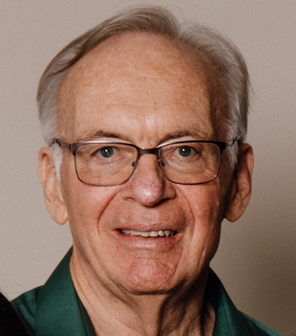

Ron Anderson | WDD 130

I'm Ron Anderson. I am a retired orthopedic surgeon and former engineer who enjoys service, travel, and lifelong learning. I have lived in Mongolia, Cambodia, and South Africa doing missionary, humanitarian and educational work. I am currently studying web development through BYU-Idaho Pathway to develop new technical skills.